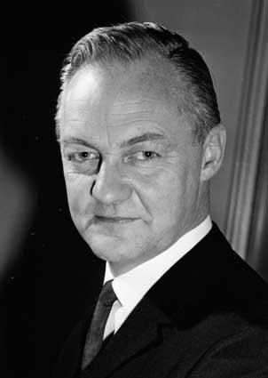

Gerard Penleigh Boyd (1919-1971) was a nationally and internationally renowned architect. He was also widely published and appreciated as an architectural critic.
Robin Boyd
In 1953 Robin Boyd, Roy Grounds and Frederick Romberg formed the practice of Grounds, Romberg and Boyd which became a leading architectural firm in Melbourne. The firm also practiced extensively in Canberra.
Although the three partners were prominent as individuals, the firm maintained a strong design unity. Some buildings revealed the hand of one or other of the architects, but in general the firm developed a corporate style, combining the philosophies of the trio and representing the advanced thinking of that era. They often worked or supervised on each other’s projects. Their work was a distinctive Australian form of the International Style, then called Contemporary. (Clerehan, 1993)
Boyd joined the National Capital Planning Committee (NCPC) in January 1968 as one of two architectural experts, the other being Professor Gordon Stephenson from Western Australia. Boyd and Stephenson were charged with creating a statement of civic design philosophy that would form the basis of the NCDC policies relating to the Buildings (Design and Siting) Ordinance 1964. These policies would guide the aesthetic, development principles and layout of buildings in the National Capital areas of Canberra.
Boyd had a prolific output of architectural designs, books and articles. He wrote over 700 articles for journals and newspapers, presented a TV series on Modernism and was the author of Victorian Modern: 111 Years of modern Architecture in the State of Victoria Australia (1947); Australia’s Home: Its Origins,Builders and Occupiers (1952); The Australian Ugliness (1960); Kenzo Tange (1962); The Walls Around Us: The Story of Australian Architecture (1962);The Puzzle of Architecture (1965); New Directions in Japanese Architecture (1968); Living In Australia (1970); and The Great Australian Drem.
His architectural work is mostly known through his residential designs. He was known for his ability to design houses that would meet client needs, solve site problems and still retain architectural integrity. The designs were heavily influenced by the functional and international styles of architecture and became known as the Melbourne Regional style. It was light, simple and elegant and unmistakably modern. (Architecture Today 1972; Saunders 1972; and Serle 1995).
Boyd’s residential designs that are registered on the ACT Heritage Register include:
- Manning Clark’s House, 11 Tasmania Circle, Forrest (1952);
- Fenner House, 8 Monaro Crescent, Red Hill (1953); and
- Eltringham House, 12 Marawa Place, Aranda (1968-69).
He is also credited with the following designs in the ACT:
- Dr Hilary Roche House, Bedford Street, Deakin (1954);
- Zoology building ANU (1961);
- three houses in Vasey Crescent, Campbell (1961) (Grounds & Boyd);
- W G Verge House, 204 Monaro Crescent, Red Hill (1963);
- 204 Monaro Crescent, Red Hill (1964); and
- Zoology Building ANU (1963-8).
In the 1960s he started to move away from the glass box functionalism of the International and Melbourne Regional styles arguing that it had a limited range of expression and instead tried, somewhat unsuccessfully, to land large prestigious commissions for advanced high-rise buildings. He submitted many designs, but few were successful. Those that he did win tended to be of a more moderate size, such as the Menzies College at La Trobe University or Churchill House. Taylor (1990:80) notes that Boyd’s interest in Brutalism was heavily influenced by his travels in Japan and he became known as the chief advocate in Australia for the “vigorous, concrete buildings of post-war Japan”, but goes on to note that his own attempts at major Brutalist designs show “...a somewhat crude, unexpressive, Brutalist aesthetic.
Boyd’s later buildings are disappointing...”. Commentary in architectural journals and works on Boyd focus on his residential designs and larger Melbourne-based buildings. References to Churchill House mention that he was working on it at the time of his death, and the most favourable account comes from Serle’s 1995 biography that noted that it was the “only new work of any consequence” (p.308) and that tenders for “Boyd’s innovative design for Churchill House were surprisingly low” (p.309). Raisebeck (2017) noted that, “...Boyd’s works and writings from 1960- 1967 depict a relatively consistent commitment to a universal modernism tempered through a regional lense...exemplified in the earlier Zoology building”, while his later work demonstrates a stark change of focus and a less coherent whole with the different façades of Churchill House showing a different compositional treatment as a result of “...Boyd’s experimental bent and abandonment of an integrated and universal modernism.”
Boyd received the Royal Australian Institute of Architects Gold Medal in 1969 and was awarded a Commander of the Most Excellent Order of the British Empire (CBE) in 1971 for his services to architecture and government. In the same year he died suddenly from a stroke while recovering from an anaesthetic as part of treatment for an infection. As a result, his work on the Former Churchill House had to be completed by another architect, Bill Williams, who had been employed by Boyd to work on the project under the supervision of a more experienced architect, Neil Clerehan (who later designed the second storey of the north wing to replace the glass display pavilion). (Serle 1995)
The Churchill House
Churchill House, at 216 Northbourne Avenue in Braddon, was designed by Robin Boyd for the Winston Churchill Memorial Trust of Australia in 1969-70, and construction was completed in 1971. It was Boyd’s last major commission, and he died prior to its completion. It is one of a small number of larger designs produced by Boyd and was Canberra’s first brutalist building.
Several components make up the complex. The main building, with east and south wings; the separate north wing or pavilion; the central pool and a rear carpark. The main building forms an L shape and with the north wing it encloses a courtyard with a large ornamental pool. The main building is three storeys high with a four storey lift tower at the southeast corner. The north wing and the carpark are two storeyed.
Although it has undergone some alterations over the years, the building still displays key features of the brutalist style with its large areas of blank wall and use off-form concrete, sloping structural fins and precast concrete non-loadbearing wall panels, precast fins for sun protection, and vertical slit windows. Churchill House displays a fairly restrained form in comparison with the major Canberra buildings that followed in this style: Cameron Offices, National Gallery of Australia and High Court of Australia.
Churchill House was built by the Winston Churchill Memorial Trust of Australia. The Trust began consideration of erecting a building of its own in 1967 and formed a building committee in 1968. In 1969 it acquired a lease for land on Northbourne Avenue, the current site, and engaged the architect Robin Boyd to design the building. The building was to provide offices for the Trust and in addition was to provide rental office accommodation for commercial tenants as a means of generating income for the Trust.
Features of the original design included:
- a glass exhibition pavilion, on the site of the current north wing, which housed a display on the work of the Trust;
- the flat roof area of the east and south wings which was intended to be a roof terrace; and
- accommodation in the building included a board room, dining room, reception area, bar and kitchen.
The cost of the works was about $1 million. The building was officially opened on 14 April 1972.
Boyd died in 1971 before completion, and W K Williams was engaged by the Trust as its site representative to replace Boyd. Robin Boyd CBE HFRAIA (1919-1971) is a noted Australian architect. Boyd was a member of a prominent artistic family, and combined a career as an architect, author and critic (Clerehan 1993). He was strongly influenced by the Modern Movement, and deeply interested in the development of Australian architecture. Boyd is often remembered best for his domestic architecture, as well as his books, but he also produced designs for larger scale works, such as in the case of Churchill House. Boyd was awarded the Gold Medal by the RAIA in 1969, and made an honorary fellow in 1970. Boyd was strongly influenced later in his career by the post-war concrete architecture produced in Japan (Taylor 1990:80). This Brutalist style is evident in the design for Menzies College Student Housing (1968) and in the design for Churchill House. In this latter phase, Boyd was seeking larger scale projects, although with only limited success. During the 1990s(?) the glass pavilion was replaced by the current north wing.
Churchill House is one of a number of Canberra buildings designed in the Late Twentieth Century Brutalist style. These include:
- National Gallery of Australia, 1971;
- Cameron Offices, 1976;
- Canberra School of Music, 1976; and
- High Court of Australia, 1980.
Churchill House is an early example in this context, and one of only two examples of an office building. While Brutalism has been described as an ethic rather than an aesthetic (Banham 1966:10), both office buildings display a more restrained form compared to the other buildings, several of which were intended to portray a distinctive image in the national capital.
Churchill House was designed by Robin Boyd for the Winston Churchill Memorial Trust of Australia in 1969-70 and construction was completed in 1971. The building is an example of the Late Twentieth-Century Brutalist Style (1960-) with its large areas of blank wall and off-form concrete.
The complex comprises a number of components: the main building with its east and south wings, the separate north wing or pavilion, the pool and the rear carpark. The main building forms an L shape in plan, and with the north wing it encloses on three sides a courtyard in which the pool is located. The main building is of three storeys with a four storey lift tower at the southeast corner, the north wing is of two storeys, and the carpark is two storeyed.


Main Building
The main building displays several different elevational treatments. The elevations facing onto the pool area feature floor to ceiling glass with minimal black metal frames to the lowest level, and precast vertical panels on the upper two storeys. Each panel has a projecting fin and are relatively narrow, with the overall affect being of closely spaced vertical fins. Beside the fins are narrow, slot windows providing minimal outlook onto the pool area.
The south and east elevations are quite different in character having long horizontal sections of flush-mounted glazing set in minimal black metal frames, with timber-textured off-form concrete spandrels between storeys. The base course of the elevation is a large section black-coated steel beam. Several window-mounted airconditioners are located on the south elevation. The blank end walls of the wings and the lift tower are off-form, timber-textured concrete with incised storey lines. At the junction of the two wings are the foyers for each floor as well as the service core including the lift. Apart from the off-form concrete walls of the service elements, the foyers feature glazing set in black metal frames which extends the full height of the building. At the ground floor level the glazing is vertical but above that for the remaining two storeys it is sloping.
The building has concrete slab floors which are either carpeted or finished in slate. Some interior walls are textured, off-form concrete similar to the exterior. Other walls are lightweight partitions. There is a mixture of ceiling treatments: off-form concrete, suspended ceilings and set plasterboard. Many of the interior fitouts appear relatively modern and are not original.The roof of the main building is set behind a parapet and appears to be graded concrete with a membrane coating.
North Wing
The north wing replaces an earlier pavilion on the same location. The current wing is a two storey structure with a flat metal deck roof set behind a parapet. The wing has an encircling steel colonnade which supports the roof and parapet. The walls are set back from the colonnade and feature flush-mounted glazing set in thin black metal frames, with textured off-form concrete spandrels, similar to the south wall of the south wing. There is an enclosed link between the north and east wings at the ground floor level.
Pool Area, Carpark and Landscaping
The pool area is lower than the surrounding site, and being mostly enclosed by the wings, has the quality of a sunken courtyard. The pool area is reached by a large flight of concrete steps from the west, and features a pond which borders a large, raised central island which is reached from one side by a set of bridging steps. The island has concrete paving, garden beds and silver birch trees, and is the location for a large fibreglass statue of Sir Winston Churchill.
The carpark is constructed in off-form concrete, with walls displaying the texture of the timber formwork.
Churchill House has a number of landscape/garden areas. At the front (west) of the building is an open lawn area and either side are mixed native/exotic plantings. The pool area contains numerous trees and shrubs, again of mixed native/exotic species. A small courtyard to the southeast of the main building features bamboo.
Stylistic Analysis
Churchill House displays several key features of the Late Twentieth Century Brutalist style as follows:
- Large areas of blank wall, especially the west wall of the south wing.
- Off-form concrete, such as the west wall of the south wing and the spandrels to the south and east wings.
In addition, it displays a number of the other features of this style:
- Sloping structural fins, being the structural steel members supporting the glazing at the corner between the east and south wings.
- Precast concrete non-loadbearing wall panels, being the cladding to the wings facing the pool area.
- Precast fins for sun protection, as above.
- Vertical slit windows, also being a part of the cladding to the wings facing the pool area.
The building generally appears to be in fair to good condition. A number of changes have been made which diminish its integrity including:
- the replacement of the original glass pavilion with the current north wing, albeit with a sympathetic design;
- the non-original window-mounted airconditioners which detract from the south elevation;
- many of the interior fitouts appear to have been modernised; and
- there are a number of non-original surface mounted conduits internally.
None the less, the building retains substantial components and details of the original design.
The House Today
Churchill House is a good example of the Late Twentieth Century Brutalist style, (1960-), displaying several key features as follows:
- Large areas of blank wall, especially the west wall of the south wing.
- Off-form concrete, such as the west wall of the south wing and the spandrels to the south and east wings.
- In addition, it displays a number of the other features of this style including: sloping structural fins, precast concrete non-loadbearing wall panels, precast fins for sun protection, and vertical slit windows.
Churchill House is one of several Canberra examples of this style, and one of only two which display a restrained form reflecting, perhaps, a more conservative approach to the style because of the intended office use. The architecture of this building may contribute to the education of designers in their understanding of Late Twentieth-Century Architectural Styles. Churchill House has interest for its association with the prominent architect, Robin Boyd. The building was his last major commission.